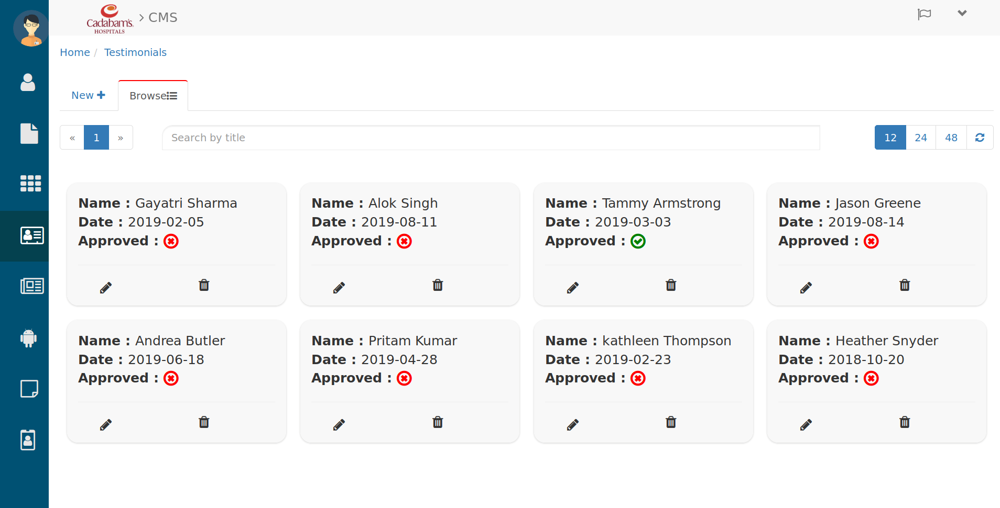
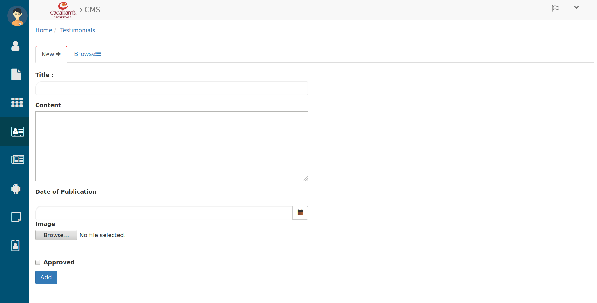
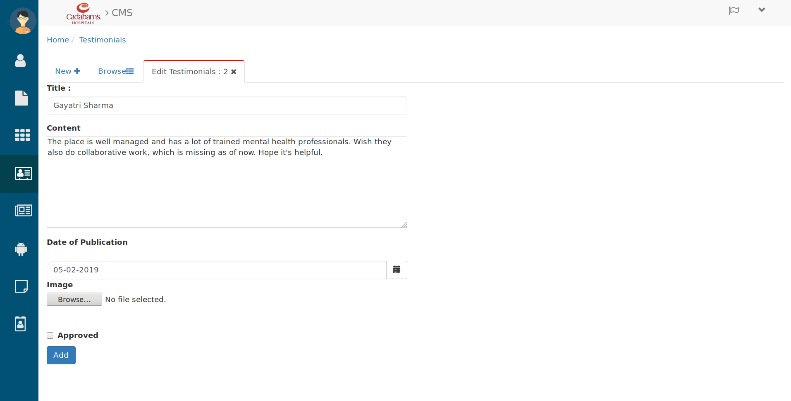

Testimonials¶
A website testimonial showcases the quality and success of a site’s products or services. Testimonials often come directly from customers and serve as a successful marketing method.
To manage the Testimonials click on Testimonials icon from menu side bar. then you will see the below tab.
Browsing Testimonials¶

Testimonials
Here you can browse all testimonials
- Search the Testimonials in search bar by entering their Title.
- Use the page and refresh button to browse Testimonials.
- Here you can see the date and approved status of testimonials.
- To create a new testimonials click on New+ then you will see the below tab.
Creating Testimonials¶

Creating Testimonials
Here fill the details in below format.
- Enter the Title for new testimonials.
- write the Content in content field.
- Pick the Date of Publication by date picker.
- Browse the relevant Image from your computer by hitting the browse button.
- check the Approve checkbox if you want to approve this testimonial.
- then click on Add button and this created testimonials Will be added in Testimonials list(Browse tab).
- To Approve testimonials and edit them click on their pencil (edit) icon. then you will see below tab
Editing Testimonials¶

Editing Testimonials
Here you can edit that testimonial’s below details.
- You can change the Title of testimonial, Content, Date of Publication, Image, Approve status.
- after changing the details click on Add button. and made changes will be updated in that testimonials.
Let’s see how it looks from user perespective then scroll down till “what our patients are saying”